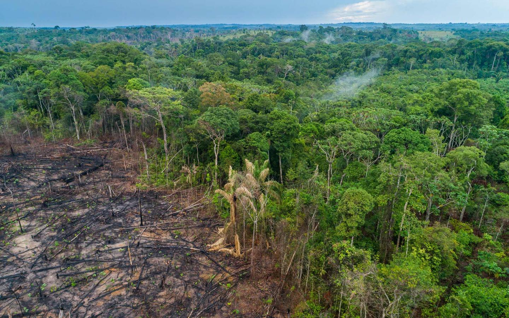

Préserver la vie sur Terre pour un avenir durable
Nous pouvons tous contribuer à la protection de la vie terrestre. Voici quelques actions concrètes :
| Indicateur | Valeur |
|---|---|
| Surface forestière | 31% du territoire |
| Territoires couverts par Natura 2000 | 12,9% du territoire terrestre français |
| Objectif de reboisement | 50 millions d’arbres plantés d’ici 2030 |
Des projets de plantation participative sont organisés partout en France. Par exemple, l'initiative "Plantons pour l'avenir" soutient des actions concrètes de reforestation avec l’aide de bénévoles et d’écoles.
